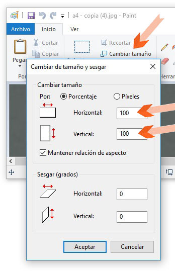

Reduce el peso de tus imágenes de forma básica en Windows 8, 8.1 y 10.


Selecciona todas las imágenes que desees reducir el peso. (Control + clic izq.)

Sobre cualquier imagen seleccionada, haz clic derecho, y elige "Editar" en el menú contextual. Cada imagen se abrirá en una ventana de Paint.


En las ventanas abiertas de Paint haz clic en "Cambiar tamaño". En "Horizontal y Vertical" cambia el 100 por 50. Y haz clic en "Aceptar".


Haz clic en el ícono "guardar" y cierra la ventana. Repite el paso 3 y 4 en cada ventana.